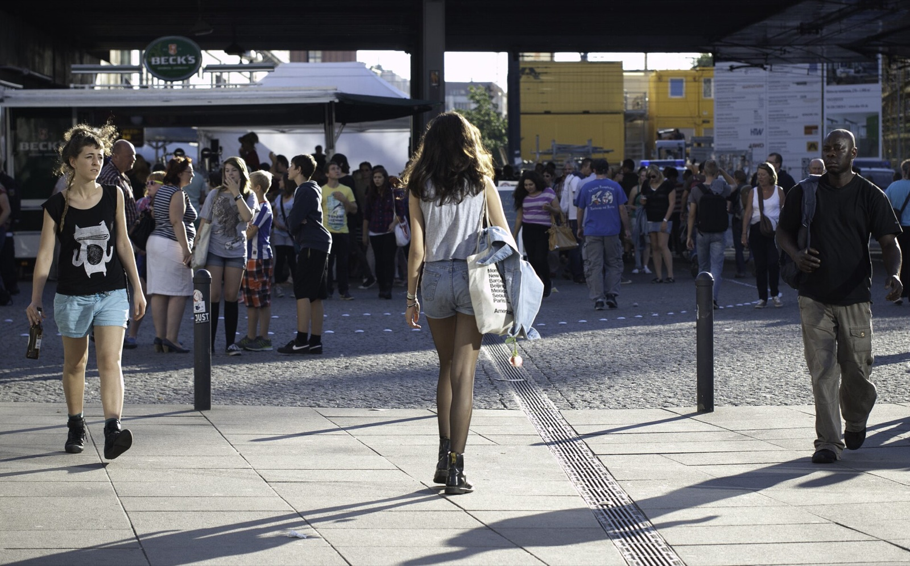

Berlin Walking Kit
Assemble the outfit for the Berlin day you are actually taking.
Tell me which ground you will cover. I read the live Berlin forecast for exactly those hours and give you one clear answer on what to wear, carry and leave behind.
Berlin forecast
Feels likeReadinglive Berlin data
RainReadinghour by hour
WindReadinggusts decide the umbrella
Your windowReadingset by the ground you pick
Loading the Open-Meteo forecast for Berlin Mitte.
Built on the hours you are actually outside
Most weather advice covers the whole day, and a Berlin day is rarely one thing. It can be dry at Alexanderplatz at noon and wet by the time you cross the Friedrichsbrücke at four. This tool only reads the hours your chosen ground puts you outside, then makes the call.
- Live forecast
- 3 kit slots
- 3 real places
What kind of Berlin ground will you take today?
Each option sets a different window of hours, and the forecast above follows your choice.
ShoesNot chosen yet
LayerNot chosen yet
CarryNot chosen yet
Your Berlin walking kit
My call
Keep the promise small. The forecast comes from Open-Meteo and moves through the day, especially the rain probability. Read it again shortly before you leave, and trust what you see out of the window over what you read here.
Hero photograph: People On Alexanderplatz by Sascha Kohlmann, CC BY-SA 3.0. Forecast data: Open-Meteo, CC BY 4.0.